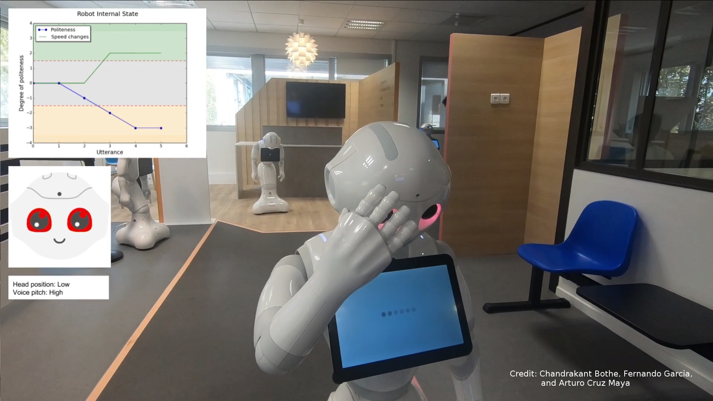
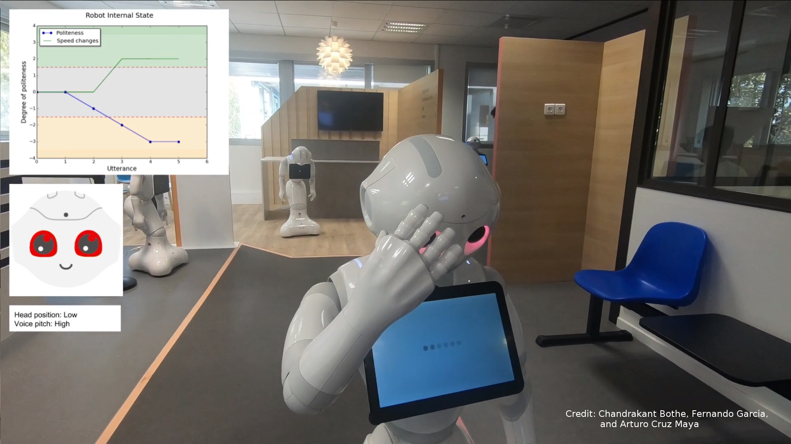
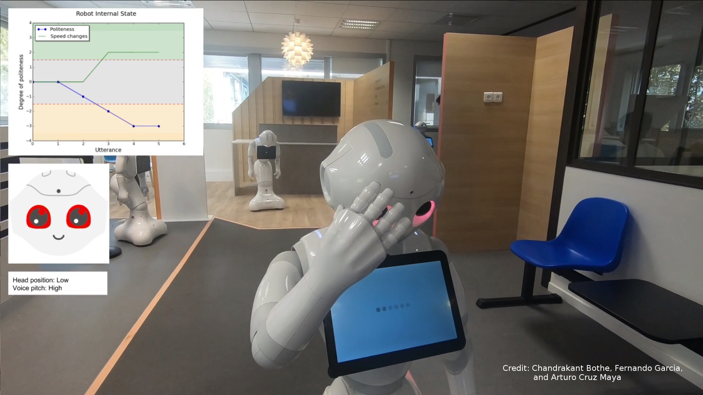
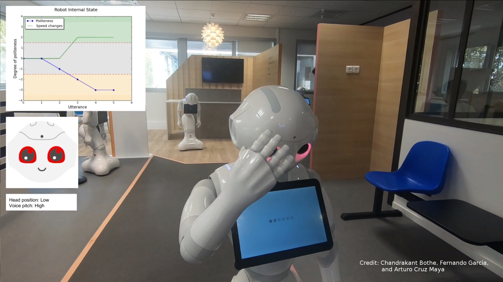

SECURE Secondment Project by Chandrakant Bothe
Towards Dialogue-based Navigation with Multivariate Adaptation based on Intention and Politeness for Social Robots
The secondment is accomplished with extensive experiment during July-August '18 in collaboration with the industrial partner SoftBank Robotics in Paris, France with their semi-humanoid robot Pepper.
Any further deatails/updates/news about this project will be posted on this page.